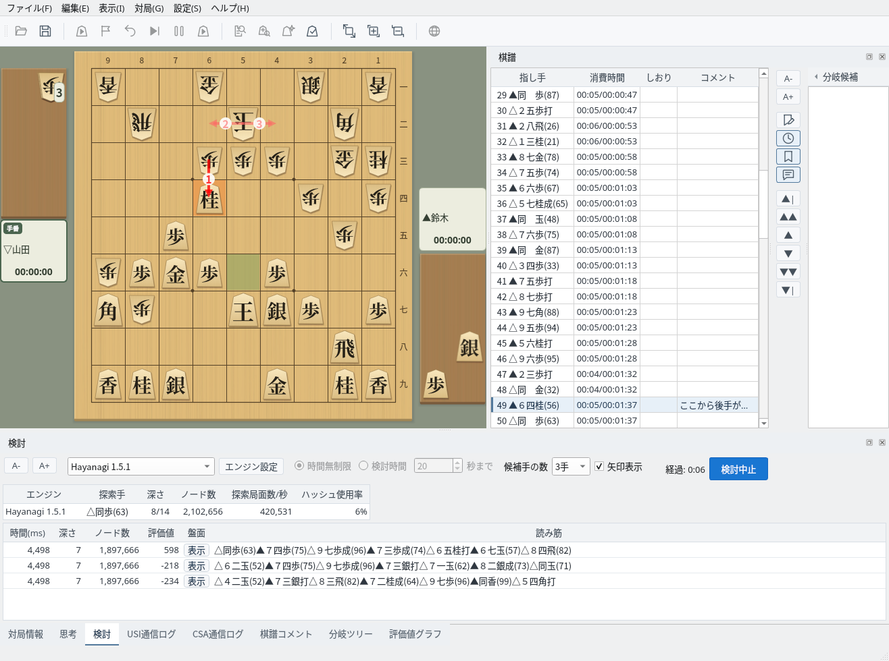
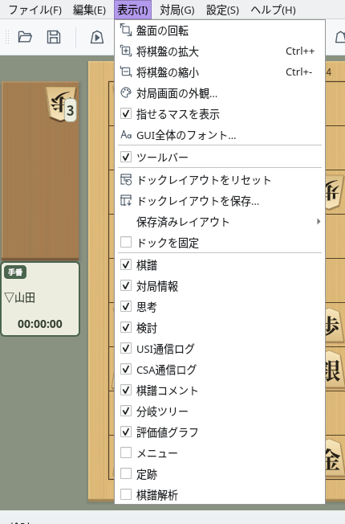
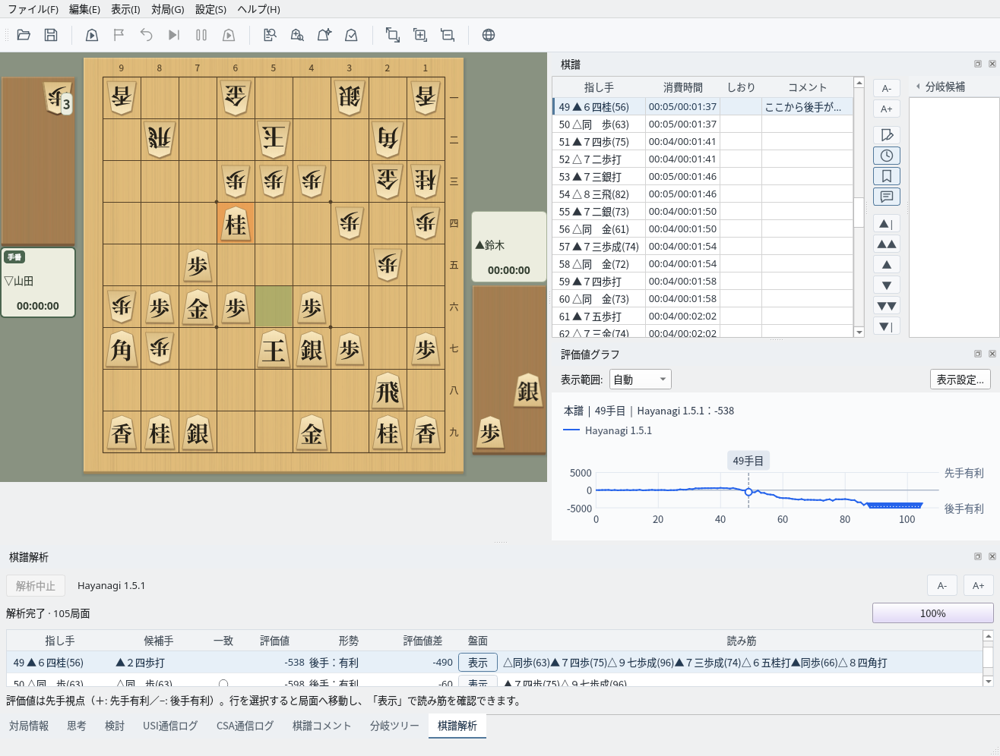
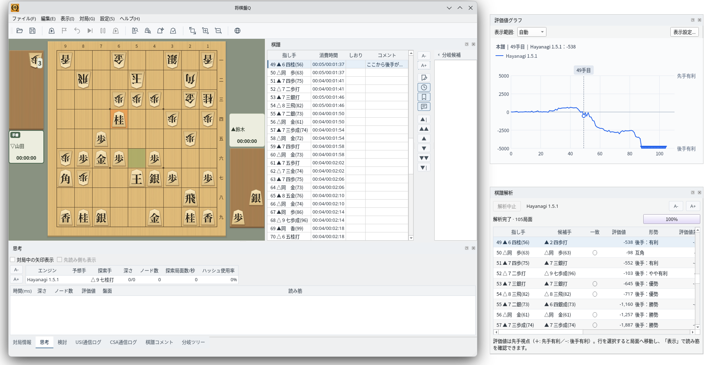
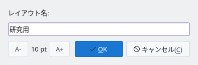
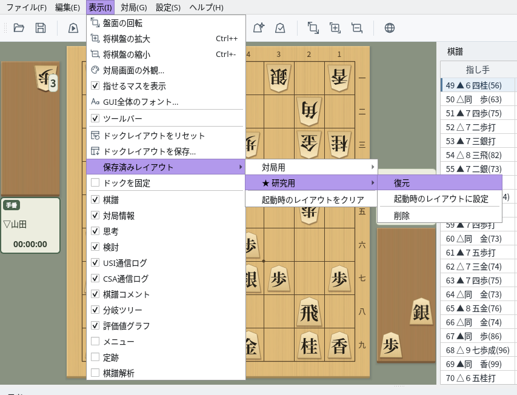

パネルを自由に配置して画面をカスタマイズ
メイン画面の棋譜や思考などはドック（パネル）として配置されています
盤面の右に「棋譜」、下に「対局情報」「思考」「検討」「USI通信ログ」「CSA通信ログ」「棋譜コメント」「分岐ツリー」「評価値グラフ」がタブでまとまっています。タブをクリックすると表示するパネルを切り替えられます。
「メニュー」と「定跡」は最初は表示されていません。「棋譜解析」は棋譜解析を始めると表示されます。

既定の配置：右に棋譜、下に思考・検討などのタブ（検討中の画面）
「表示」メニューの下部にパネルの一覧があり、チェックを付けると表示、外すと非表示になります。パネルのタイトルバー右端の × でも閉じられます。閉じたパネルは「表示」メニューから再び表示できます。

「表示」メニュー：チェックでパネルの表示・非表示を切り替える
パネルをドラッグして、好きな位置や別のウィンドウに移します
パネルのタイトルバーをドラッグすると、メインウィンドウの上下左右の端へ移動できます。別のパネルの上で離すと、そのパネルとタブにまとまります。パネルどうしの境界をドラッグすると大きさを変えられます。

配置の例：評価値グラフを棋譜の下に移し、下段に棋譜解析の結果を表示
タイトルバーをメインウィンドウの外までドラッグするか、タイトルバーをダブルクリックする（またはタイトルバー右端の ⧉ を押す）と、パネルが独立したウィンドウになります。もう一度ダブルクリックするとメインウィンドウに戻ります。
複数のモニターを使う場合は、評価値グラフや棋譜解析を別のモニターに置いて広く表示できます。

フローティング：評価値グラフと棋譜解析を別ウィンドウにした例
よく使う配置を名前を付けて保存し、いつでも呼び出せます
「表示」→「ドックレイアウトを保存…」でレイアウト名を入力して保存します。同じ名前のレイアウトがあるときは、上書きするかの確認が表示されます。

ドックレイアウトを保存：レイアウト名を入力する
「表示」→「保存済みレイアウト」に保存した名前が並び、それぞれ「復元」「起動時のレイアウトに設定」「削除」を選べます。起動時のレイアウトには★が付き、次回からその配置で起動します。「起動時のレイアウトをクリア」で解除すると、既定の配置で起動します。
起動時のレイアウトを設定していないときは、メインウィンドウ内の配置は次回起動時に既定に戻ります。「棋譜」「評価値グラフ」「メニュー」「定跡」「棋譜解析」の表示状態と、別ウィンドウにしたときの位置は引き継がれます。

保存済みレイアウト：★が起動時のレイアウト。各レイアウトを復元・削除できる
「表示」→「ドックを固定」にチェックを付けると、パネルの移動や別ウィンドウ化ができなくなり、誤ってドラッグして配置を崩すことを防げます。パネルの表示・非表示は切り替えられます。
「表示」→「ドックレイアウトをリセット」を選ぶと、別ウィンドウにしたパネルも含めて、すべてのパネルが既定の配置に戻ります。